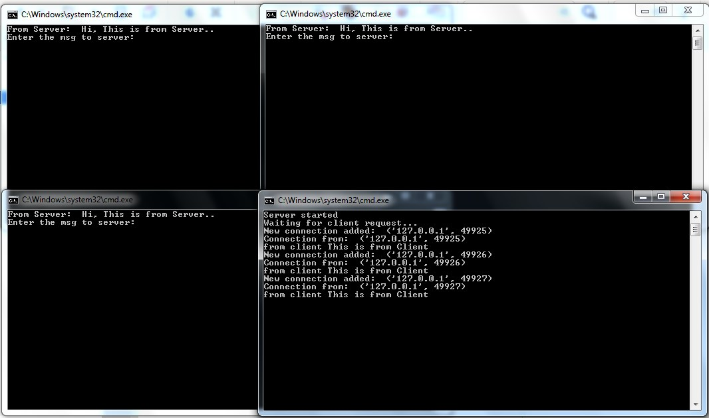

Описание: Программа на языке PYTHON
import socket
SERVER = "127.0.0.1"
PORT = 40900
client = socket.socket(socket.AF_INET, socket.SOCK_STREAM)
client.connect((SERVER, PORT))
client.sendall(bytes("This is from Client", 'utf-8'))
while True:
in_data = client.recv(1024)
print("From Server: ", in_data.decode())
out_data = input("Enter the msg to server: ")
client.sendall(bytes(out_data, 'utf-8'))
if out_data == 'bye':
break
client.close()
=========================================
import socket
SERVER = "127.0.0.1"
PORT = 40900
client = socket.socket(socket.AF_INET, socket.SOCK_STREAM)
client.connect((SERVER, PORT))
client.sendall(bytes("This is from Client", 'utf-8'))
while True:
in_data = client.recv(1024)
print("From Server: ", in_data.decode())
out_data = input("Enter the msg to server: ")
client.sendall(bytes(out_data, 'utf-8'))
if out_data == 'bye':
break
client.close()
=========================================
import socket
SERVER = "127.0.0.1"
PORT = 40900
client = socket.socket(socket.AF_INET, socket.SOCK_STREAM)
client.connect((SERVER, PORT))
client.sendall(bytes("This is from Client", 'utf-8'))
while True:
in_data = client.recv(1024)
print("From Server: ", in_data.decode())
out_data = input("Enter the msg to server: ")
client.sendall(bytes(out_data, 'utf-8'))
if out_data == 'bye':
break
client.close()
=========================================
import socket, threading
class ClientThread(threading.Thread):
def __init__(self, clientAddress, clientsocket):
threading.Thread.__init__(self)
self.csocket = clientsocket
print("New connection added: ", clientAddress)
def run(self):
print("Connection from: ", clientAddress)
self.csocket.send(bytes("Hi, This is from Server..", 'utf-8'))
msg = ''
while True:
data = self.csocket.recv(2048)
msg = data.decode()
if msg == 'bye':
break
print("from client", msg)
self.csocket.send(bytes(msg, 'utf-8'))
print("Client at ", clientAddress, " disconnected...")
LOCALHOST = "127.0.0.1"
PORT = 40900
server = socket.socket(socket.AF_INET, socket.SOCK_STREAM)
server.setsockopt(socket.SOL_SOCKET,socket.SO_REUSEADDR, 1)
server.bind((LOCALHOST, PORT))
print("Server started")
print("Waiting for client request...")
while True:
server.listen(1)
clientsock, clientAddress = server.accept()
newthread = ClientThread(clientAddress, clientsock)
newthread.start()
